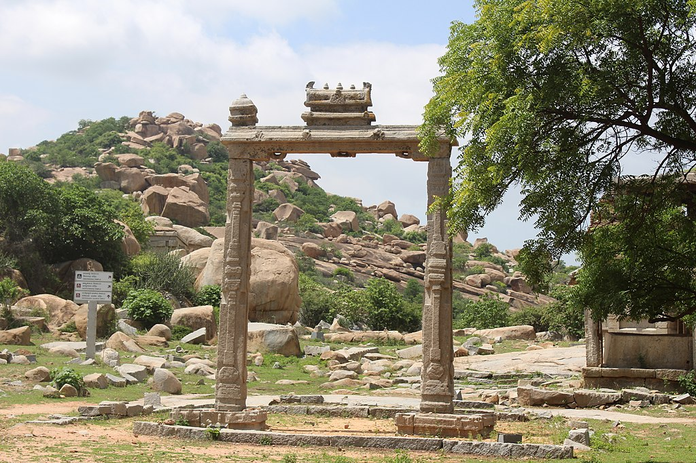
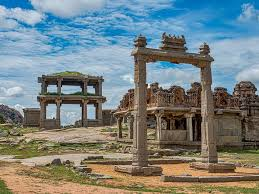
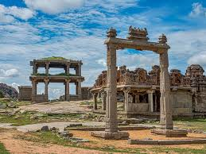

1. The Stone Chariot- The chariot is actually a shrine dedicated to Garuda, built inside the Vittala Temple Complex. The massive sculpture of Garuda, Lord Vishnu’s escort once was seated atop the chariot but it is empty at the present date. The Hampi Chariot has earned its name among the other three famous stone chariots in India- One in Konark, Odissa, and the other in Mahabalipuram


2. Vitthla temple The Vittala Temple or Vitthala Temple in Hampi is an ancient monument that is well-known for its exceptional architecture and unmatched craftsmanship. It is considered to be one of the largest and the most famous structure in Hampi. The temple is located in the north eastern part of Hampi, near the banks of the Tungabhadra River. The iconic temple has amazing stone structures such as the incomparable stone chariot and the fascinating musical pillars. This predominant monument of Hampi is a major attraction of the ruined town and is a must-see for visitors and tourists.


3. Scale At Hampi -King’s Balance in Hampi is an ancient and rare balance scale. It is located to the southwest of the Vittala Temple, at the end of the Kampa Bhupa’s Path. This rare balance scale is also known as Tula Bhara or Tula Purushadana. It attracts a lot of visitors due to its interesting history and its amazing structure that remains almost intact even today
.jpg) 

4. Krishna Temple The Krishna Temple is also among the Group of Monuments which is currently listed as a part of the World Heritage Monuments by the UNESCO. This temple was built by the ruler Krishnadevaraya of the Vijayanagara period in the year 1513 A.D. He erected this temple in honour of winning the battle and subsequent annexure of Utkala or the eastern reign of Udayagiri. This place is currently known as Orissa